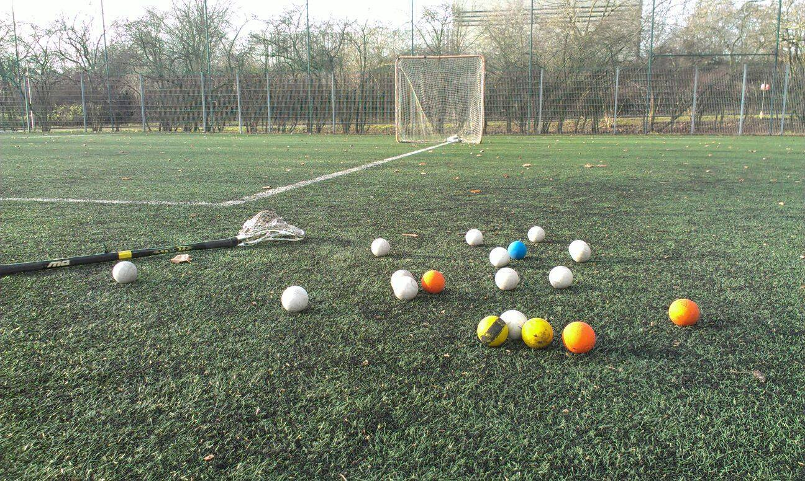
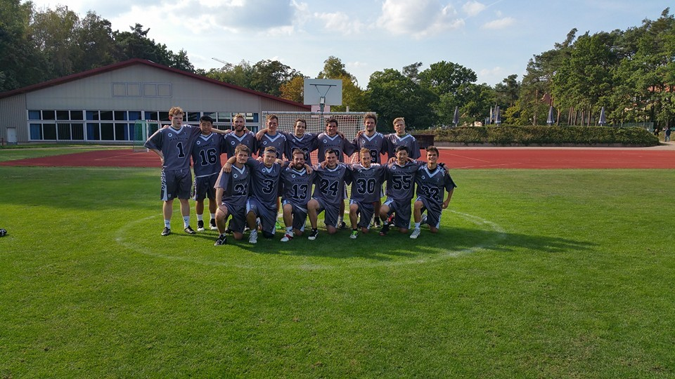
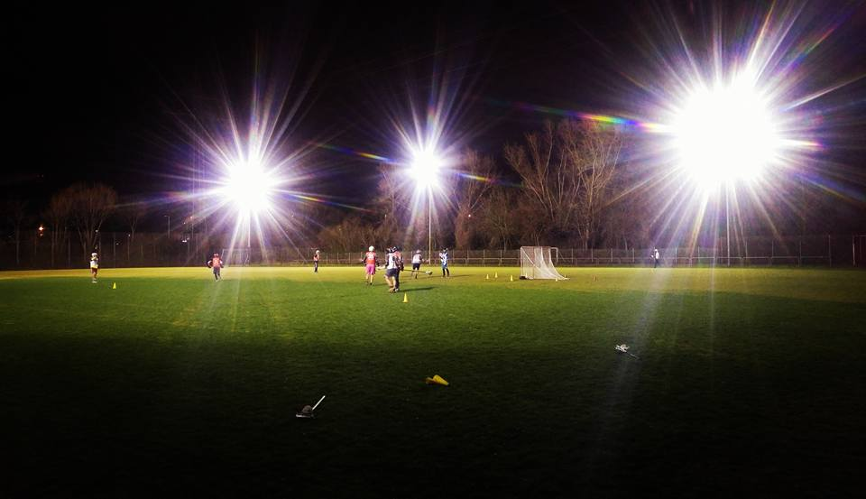
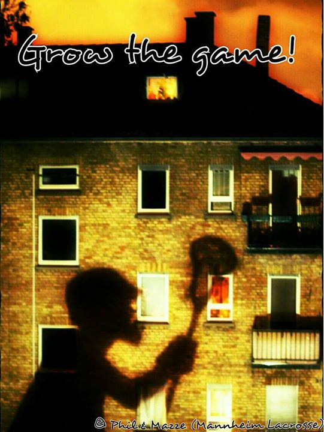
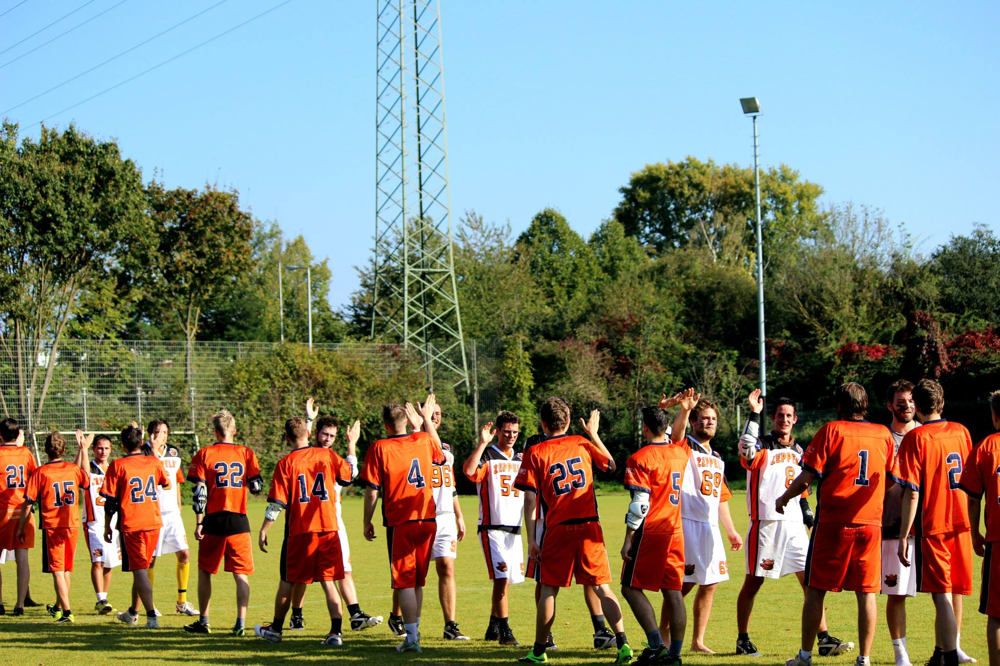
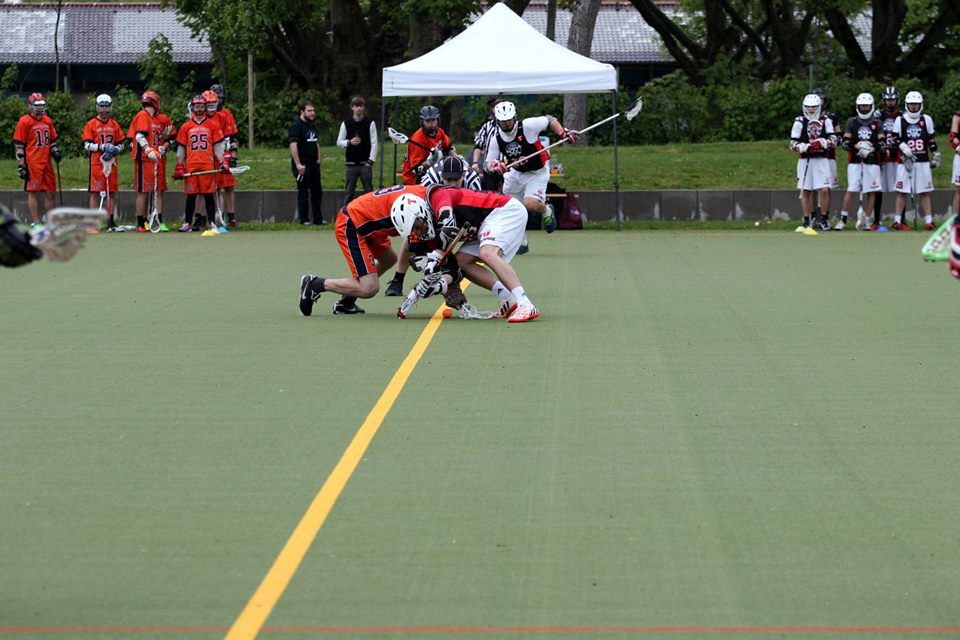
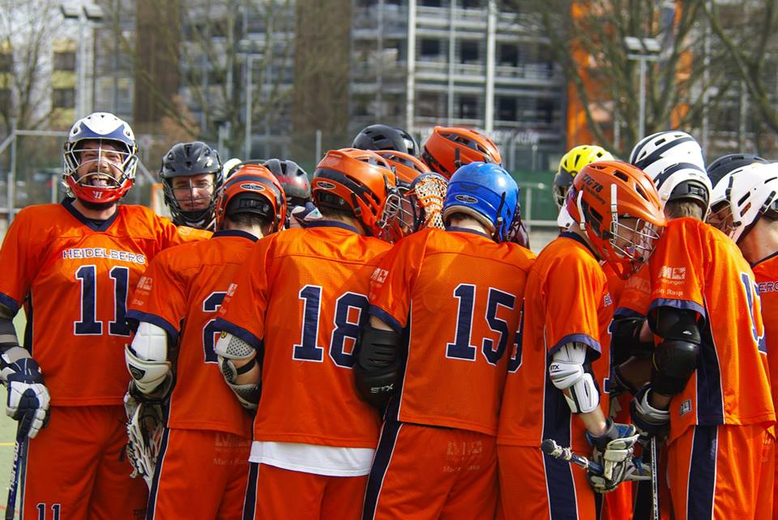

News rund um Mannheim Lacrosse
Die Winterpause ist vorbei!
Ab kommendem Montag, 01.02.2016 wird wieder in Sandhofen trainiert!
Trainingszeiten wie immer:
Montags & Mittwochs 20-22 Uhr
Auch Beginner sind jederzeit im Training willkommen!

Von der „Road to Mannheim“ ins unbekannte Neue – 2015: ein Rückblick
Die „Road to Mannheim“ :
Die erste Jahreshälfte 2015 begann bereits vielversprechend. Startete man in die Hinrunde der vergangenen Saison nämlich in einen Dreikampf um den Aufstieg in die erste Liga. Über die Winterpause bekam man zudem die Zusage, dass die dazugehörigen Play-Offs in Mannheim ausgetragen werden – es begann die „Road to Mannheim“. 5 Siege, 1 direkte Niederlage und eine Niederlage in der Overtime bis Mitte Mai führten zur Meisterschaft der Baden-Württemberg Liga. Die gleichzeitige Qualifikation für die Play-Offs zeigten deutlich, dass es für die SG Mannheim/Heidelberg nun nur noch ein Ziel geben kann: Den Aufstieg in die Bundesliga Süd! Es kam also zum langerwarteten Wochenende im Mai an dem sich die SG Mannheim/Heidelberg erst den Lacrossekollegen aus Passau/Regensburg (Sieg: 11:1) stellen mussten, um sich anschließend im großen BW-Derby und Play-Off-Finale gegen Tübingen mit einem 13:2 Sieg durchzusetzen. Die Ziele waren erreicht worden – die SG stieg auf in die Bundesliga! Eine super erste Jahreshälfte – man durfte Stolz auf die letzte Saison zurückblicken und sich auf die neuen Herausforderungen freuen!
Das unbekannte Neue:
Es begann die Sommerpause für die SG und somit ein Sommer vollgepackt mit Turnieren, sowie der Planung der neuen Saison. Schon während der Hinrunde zeichnete sich ab – der Verein wächst und gedeiht. Neue Spieler, alte Bekannte, welche nach Mannheim gezogen waren und die Gründung eines Heilbronner Lacrossevereines durch einen Alt-Mannheimer, sollten die SG wachsen lassen. So testete man auf den Turnieren und in Testspielen, die neuesten Taktiken und Spielzüge, die Trinkfestigkeit der Rookies und die verschiedensten Konstellationen von Middie Lines. Durch diesen Zuwachs der Spieleranzahl und Popularität des Sports in Mannheim wurde eine zweite Mannschaft gegründet, um auch Anfängern Spielpraxis bieten zu können. Mannberg A und B standen nun vor dem unbekannten Neuen. Wie setzt sich das A Team in der Bundesliga durch? Schafft es das zusammengewürfelte Mannberg B sich zu Formen? Die Saison begann und sollte dies nun zeigen. Den Leistungsanspruch der Bundesliga bekam Mannberg A direkt zu spüren. Trotz des intensiven Trainings und der neuen taktischen Ausrichtung, schaffte die A-Mannschaft in der Hinrunde keinen Sieg. Ähnlich erging es dem B-Team: 1 Startsieg gegen Tübingen mit anschließenden 6 Niederlagen, läuteten die Winterpause ein. Trotz der Platzierungen am jeweiligen Tabellenende, darf man sich auf eine schöne Rückrunde freuen – sowohl Mannberg A und B zeigten fast von Spiel zu Spiel Leistungssteigerungen. Zu dieser Steigerung und für die Geduld, dankte der Mannheimer Part der Mannschaft Coach Pascal auf der Weihnachtsfeier, welche den Abschluss des ereignisreichen Jahres darstellte.
Alles in allem, darf man mit dem Jahr 2015 sehr zufrieden sein. Aufstieg und Ausbau des Vereins, Gründung eines zweiten Teams und das persönliche Zusammenrücken waren in diesem Jahr bereits erreicht worden. Nun gilt es, das Positive aus dem vergangenen Jahr mitzunehmen und an den einen oder anderen Stellschrauben zu drehen, um den Fans und uns ein schönes Lacrossejahr 2016 zu bereiten.
Wir bedanken uns für das vergangene Jahr bei allen Mannschaften, Refs und Offiziellen, sowie unseren Fans, unseren Partnern und natürlich nochmals unserem Mannheimer Coach Pascal und unserem Vorstand! Auf ein geiles Jahr 2016! Sticks up!
Verspäteter Halloween-Schreck für das Mannberger B Team!
Gerne hätten wir euch hier einen positiven Spielbericht geliefert, nur ist dies leider nicht möglich.
Obwohl man an diesem Sonntag mit dem Ziel Punkte aus Ulm zu entführen gestartet war, schien diese Motivation bereits nach dem ersten Face-Off verloren gegangen zu sein und man verschlief das komplette 1. Quarter. Nach 20 Minuten stand es also bereits 8:0 für Friedrichshafen/Ulm. Aus diesem verspätetem Halloween-Schreck erholte sich die Mannschaft leider nicht mehr: 3:1 / 3:0 / 3:0 gingen die nächsten 3 Quarter aus. Endstand: 17:1 für Friedrichshafen/Ulm.
Karlsruhe
A-Team
Auch dieses Wochenende muss sich das A Team leider wieder geschlagen geben, diesmal mit einem 6:12 gegen Karlsruhe A.
B-Team
Zum zweiten Heimspieltag dieser Saison trafen sich die jeweils zweiten Mannschaften von Mannberg und Karlsruhe. Während Mannberg B mit einem Sieg und einer Niederlage ins Spiel startete und versuchte die Niederlage gegen Stuttgart B aus letzter Woche wieder gut zu machen, galt es für Karlsruhe B die ersten Punkte dieser Saison aus dem sonnigen Mannheim zu entführen.
Nach schöner Soloarbeit von Jacob Tong startete Mannberg B mit dem ersten Tor in die Partie. Der Anschließende Ausgleich von Karlsruhe B in Minute 8, wurde knapp 2 Minuten später von unserem Dauerbrenner Danecker wieder egalisiert. Leider kam Karlsruhe im 1. Quarter noch zu zwei weiteren Toren, sodass man mit einem 2:3 in die erste Pause ging.
Nach diesem offenen Schlagaustausch, galt es für den Mannberg B Coach die Mannschaft noch einmal zu stärken und mit einer voluminösen Motivationsrede das Team auf das 2. Quarter vorzubereiten.
Leider ergab dies nicht annähernd die erhoffte Wirkung, weshalb es nach dem 2. sehr durchwachsenem Quarter nun 3:6 für Karlsruhe B stand. Lediglich Michael Kelley zeigte hier mit dem 3. Tor für die SG seine Qualitäten.
Wieder galt es für die Coaches Pascal und Flo das Team neu zu motivieren. Akribische Fehleranalyse und eine wachmachend laute Ansprache sollte diesmal die erhoffte Wirkung bringen und das Team aus dem Tiefschlaf der ersten beiden Quarter aufwecken.
So startete wieder Danecker den ersten guten Angriff des 3. Quarters, welcher auch gleich das nächste Tor markieren sollte! Trotz Steigerung in diesem Viertel, einem starken Schuss gegen das Aluminium, und weiteren sehenwert, aber erfolglosen Chancen, sowie je einem weiteren Tor von Danecker und Kelley sollte es am Ende diesen Viertels nun leider doch nur 6:9 für Karlsruhe stehen.
Im 4. Quarter galt es also für die Mannberger 2. Reihe alles in die Wagschale zu werfen und das Spiel nocheinmal zu drehen. Obwohl man hier erst einmal das 6:10 gefangen hatte, war es nun Jacob Tong der das Team mit 2 Toren in Folge zurück in das Spiel bringen sollte.
Kaum 11(!!!) Sekunden nach dem 8:10 war es dann Sebastian Poth, der nach einem Face-Off die Reihen der Karlruher durchbrach und mit einem unhaltbaren Schuss das 9:10 markierte! Durch die derart offensive Einstellung und dem Glauben daran das Spiel in der letzten Minute zu
drehen und den Fans hier eine Sensation zu bieten zu können, fing man jedoch wiedermals 2 Tore, sodass Karlsruhe das durchwegs spannende Spiel mit 12:9 gewann.
Trotz der schmerzhaften 2. Niederlage in Folge durfte sich die Mannberg B Reihe nachdem Spiel über 3 Dinge freuen: Die Steigerung der Mannschaftsleistung im Vergleich zum letzten Spiel, der Glaube an sich selbst auch einen hohen Rückstand noch drehen zu können und natürlich das obligatorische isotonische Gerstenkaltgetränk!
Heimspiel gegen den Vizemeister (A-Team)
Das A Team musste sich dem Vizemeister Stuttgart Lacrosse geschlagen gegeben. Das erste Quarter fing für die Aufsteiger Mannberg A relativ solide an; die beiden Teams beschnupperten sich erst einmal und somit ging das erste Quarter vor allem durch die hervorragende Defensiv Leistung nur mit 2:1 verloren. Im zweiten Quarter nutzte Stuttgart allerdings einige Fehler der Mannberger aus und konnte auf ein 5:1 zur Halbzeitpause erhöhen. Nachdem Stuttgart am Anfang des dritten Quarters auch noch auf 7:1 erhöhen konnte, ließen sich die Mannberger allerdings nicht beirren und kämpften sich nochmal an Stuttgart heran, wodurch es zum Ende des 3. Quarters nur noch 7:4 für Stuttgart stand. Leider konnte Mannberg darauf im 4. Quarter nicht mehr aufbauen. Die Stuttgarter nutzen ihre Chancen gnadenlos und so endete das Spiel mit einem doch klaren 13:4 für Stuttgart. Auch wenn das Endergebnis den Spielverlauf nicht zu 100% widerspiegelt gewinnt Stuttgart verdient und der Mannberg begibt sich wieder ins intensive Training um beim nächsten Spiel ein knapperes Ergebnis zu erreichen.
Erfolgreicher Start für Mannberg II
MannBerg kämpft sich nach 0-2 Halbzeitstand zurück und gewinnt 5-2 gegen Tübingen!
Premiere in der 1. Bundesliga Süd (A-Team)
Nach 2 Jahren als SG in der Landesliga Baden-Württemberg holte das Team letzte Runde erst die Meisterschaft in der BaWü-Liga und setzte sich dann noch in den play-offs gegen die bayerischen Teams durch.
Nun musste gezeigt werden, dass der Sommer nicht nur zum daddeln, sondern auch zur intensiven Vorbereitung genutzt wurde.
MannBerg A kämpft sich 2x nach Rückstand zurück und erzwingt mit 7-7 die Overtime gegen Erlangen. Diese geht leider im sudden death noch 7-8 verloren. Trotzdem großer erster Auftritt in der ersten Liga!

Zweites Spiel, zweiter Sieg!
Klarer 7-1 Sieg gegen Zeppelin Lacrosse Friedrichshafen.
Eigentlich hatte sich die SG auf ein knappes und intensives Spiel eingestellt – gingen die beiden Partien letztes Jahr doch mit jeweils 6-5 denkbar knapp für die SG aus. Das Hinspiel wurde sogar erst in der Overtime entschieden.
Gestern dagegen dominierte die SG von der ersten Minute an, nach nicht einmal zwei gespielten Minuten stand es bereits 1-0. Nach dem ersten Quarter dann schon 3-0, der Halbzeitstand schließlich 5-0. Bis dahin belagerte die SG die Friedrichshafener Hälfte förmlich, eroberte blitzschnell die Bälle bei den Rides zurück und ließ den nur 13 Mann aus Friedrichshafen kaum Zeit zum Verschnaufen. Bezeichnenderweise war die torgefährlichste Situation in der ersten Hälfte auf das Mannheimer Tor auch ein misslungener Clear, der nur knapp über die eigene Latte ging.
Nach der Halbzeit schlich sich dann jedoch der Schlendrian bei der SG ein, plötzlich hatte Friedrichshafen viel Platz, konnte ungestört das Angriffsspiel aufbauen und kam immer wieder aus dem Spiel heraus oder nach einem Fastbreak zum Torschuss. Die Verhältnisse schienen auf einmal umgekehrt: Friedrichshafen machte mit Tempo Druck auf die Abwehr der SG, obwohl das Spielerverhältnis eigentlich 21-13 zugunsten der SG betrug. Dazu gingen viele Bälle im Angriff zu schnell verloren. Verdienterweise kam Friedrichshafen nun auch zu ihrem ersten Treffer, der den Zwischenstand von 5-1 markierte.
Im letzten Quarter kam wieder etwas mehr Ruhe ins Spiel und die erschöpften Friedrichshafener stemmten sich nicht mehr so stark dagegen, so dass noch zum 6-1 und 7-1 erhöht werden konnte.
[Scorer: Pascal Pepito x 3, Flo Nachtigall x2, Sebastian Burgert x1, Tobias Ostermann x 1]
Insbesondere in den ersten beiden Quartern ein starkes Spiel der SG, die einen Saison-Traumstart hinlegt: 14 Tore bei nur 3 Gegentoren, so lautet die Bilanz nach zwei Spielen für den „Mann-Berg“.
Nächste Woche am Samstag empfangen wir um 12.00 Uhr Stuttgart B – diesmal auf dem Platz in Heidelberg.
3,2,1… MANN-BERG!
Saisonauftakt gelungen – Platz in Sandhofen eingeweiht
Bei der Premiere in Sandhofen, dem neuen Zuhause der Mannheimer Lacrosser gewinnt das Herrenteam der SG Heidelberg/Mannheim gegen die Pumas Freiburg 7-2.
Während in den ersten beiden Quartern dem einen oder anderen Mannberger die lange Sommerpause noch anzumerken war – und die SG sogar 0-1 in Rückstand geriet, wurde ab dem dritten Viertel richtig aufgedreht: das 2-1, 3-1 und 4-1 fiel innerhalb der ersten 10min nach der Halbzeit. Freiburg kam noch kurz auf das 4-2 heran, konnte im letzten Quarter aber kaum noch dagegen halten und kassierte zusätzlich einige Strafzeiten, was die SG mit dem 5-2, 6-2 und 7-2 strafte. Fairer halber muss jedoch erwähnt werden, dass Freiburg nur mit 12 Mann und dem gestrigen Spiel inkl. Overtime gegen Tübingen in den Knochen in Mannheim antrat.
Danke an das Team aus Freiburg, den Refs, allen Zuschauern, der Spielervereinigung Sandhofen – vor allem Platzwart Harald für das am besten gekreidete Lacrossefeld ever!!
Kommende Woche am Samstag, den 04. Oktober empfängt die SG -erneut in Sandhofen um 13.30 Uhr- Zeppelin Lacrosse Friedrichshafen.
3,2,1… MANNBERG!!
Bäääääääääääm!




